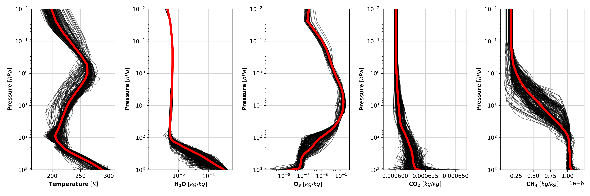
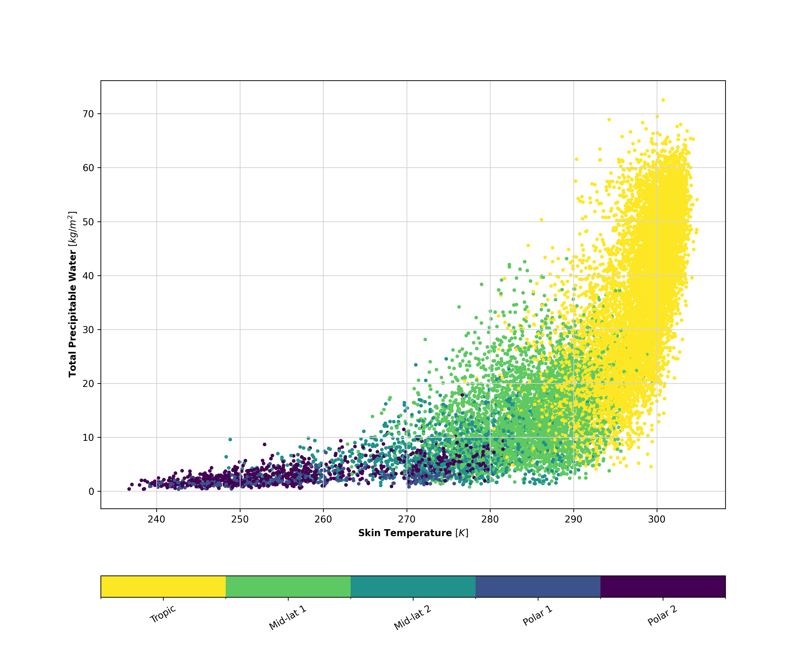
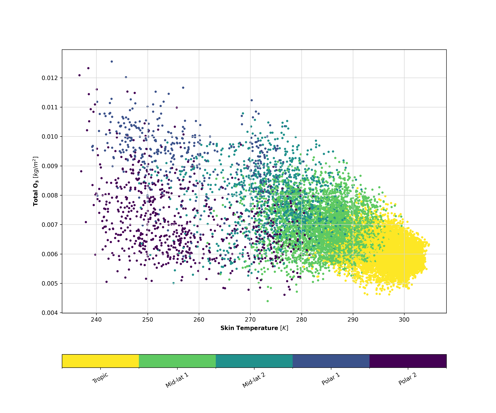
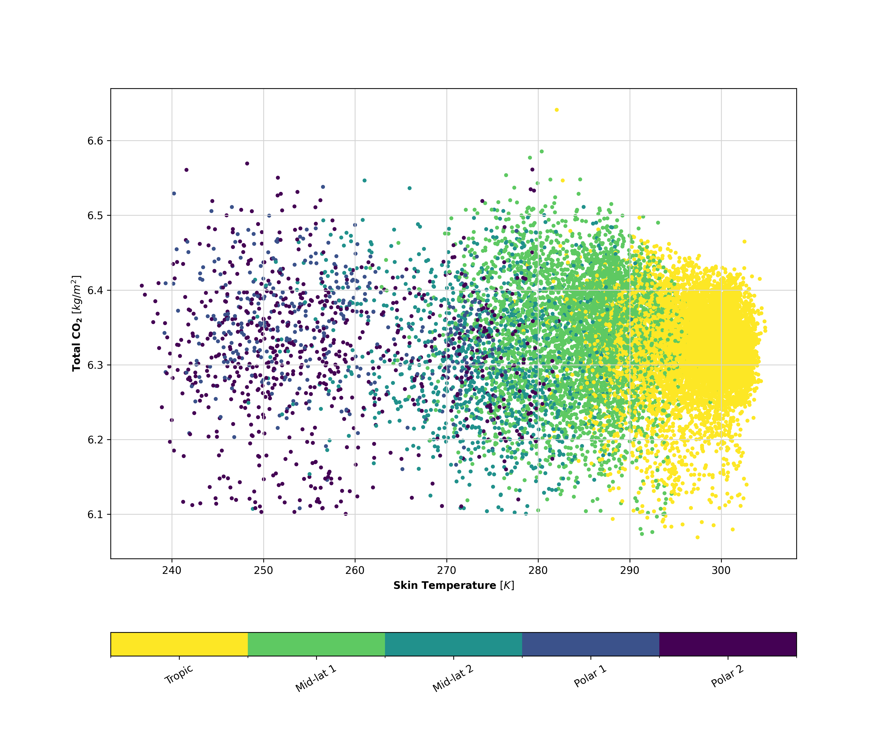
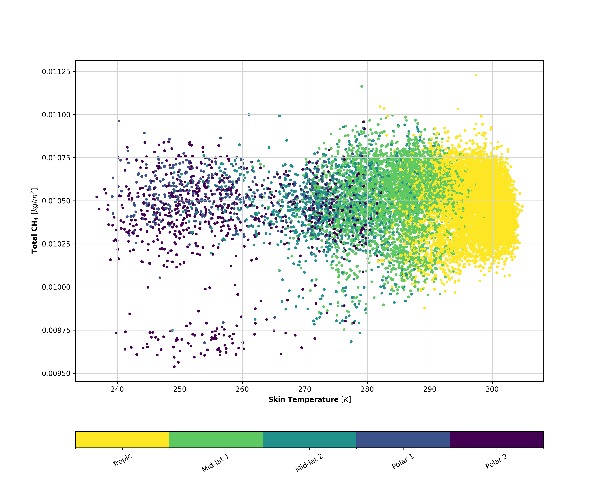

Radiative Transfer Modeling
Comparison between RTTOV, 4A and IASI observations
Jean-Marie Lalande, Raymond Armante, Jérôme Vidot
Objectives
- Follow recommendations from the ITSC and Trattoria on radiative transfer codes intercomparisons
- Validation of new developments in Radiative Transfer codes
- Identify potential systematic errors in spectroscopic databases, codes, etc
The ARSA databases
- ARSA (The Analysed RadioSounding Archive+ERA-interim, 43 levels) : P, T, H2O, O3, Tsurf
- Emissivities : IREMIS
- Copernicus Atmospheric Monitoring Service (CAMS) : CO2, CH4
- 15310 atmospheric profiles
- Colocated IASI observations


The ARSA profiles
Total columns of gases




RTTOV vs 4A: specificities of Radiative Transfer Codes
RTTOV vs 4A
| RTTOV v13\cite{Saunders2018} | 4A/OP v1.7\cite{Scott1981} | |
|---|---|---|
| Model type | Fast Band model\(^{\dagger}\) | Fast Line-By-Line\(^{\dagger\dagger}\) |
| Spectral Range | UV to Submillimeter | Infrared \([600 − 3000] \ \ cm^{-1}\) |
| # Molecules | 28 (7 variables) | 52 |
| Spectroscopic DB | HITRAN 2012 | GEISA 2016 |
| Water Vapor | MT CKD (3.2) | MT CKD (3.2) |
| Jacobians | ||
| Main Purpose | Data assimilation in NWPs | Greenhouse Gases Retrievals |
Full spectrum Comparison
Results of RTTOV vs 4A on the ARSA database
test
Jacobian Comparison
Temperature 1/2


Temperature 2/2